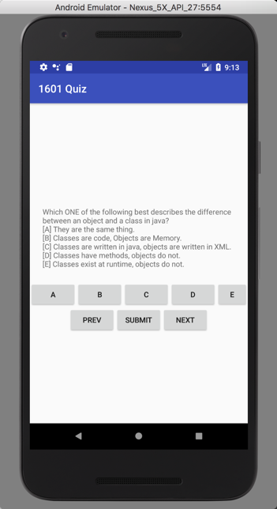

This assignment is to build upon our first 6 tutorials and build an android app for practicing Midterm test questions.
This assignment is based on tutorials 01-06. You may use any demo or answer code from these exercises, or any other code we post on the course web site as part of your assignment answers.
This assignment is based on 10 specific design requirements numbered R1.1... R1.10. Two marks each for a total of 20 marks.
Marking is based on requirements as follows:
| Req Type | Marking |
|---|---|
| R0.x | Assignment gets 0 if any critical submission (red) |
| R0.x | You lose 2 marks for each good practice (orange) |
| R1.x | You earn 2 marks for each design requirement (green) satisfied and well implemented; 1 mark if it's partly met or met but not well implemented; and 0 if it's not met. |
The following submission and good practice requirements will pertain to all your assignments regardless of what your application is supposed to do. These requirements are to ensure that your code is readable, robust and follows good software engineering practices.
R0.0 UNIQUENESS REQUIREMENT: The solution and code you submit MUST be unique. That is, it cannot be a copy of, or be too similar to, someone else's code, or other code found elsewhere. A mark of 0 will be assigned to any assignment that is judged by the instructors or the TA's not to be unique. (You are free, however, to use any code posted on our course web site in your assignments including tutorial demo code or answer code.)
R0.1 CODE DEMONSTRATION: Assignments in the course will be evaluated by you demonstrating your code in class on the day the assignment is due. After which the TA's will also check the code that you submit to culearn -because detailed examination is not possible during the classroom demos. If you do not demo your code but only submit it there will be a 50% marks penalty. That is, you can only get half marks for undemonstrated submissions.
R0.2 CODE ORGANIZATION: SUBMISSION AND COMPILATION: Your code should be submitted to culearn as an Android Studio 3.5.x project with API level 29 and an appropriate min API. IMPORTANT: You should do a Build->Clean Project before you submit the code. This will significantly reduce the size and provide us with a startring place for a clean compile. Zip up the files using .zip format (not other compression formats.) The markers must be able to compile your code using the current Android Studio 3.5.x. Your code should run on either an android virtual device (AVD) or a real device but need not be tested on both. You MUST provide a README.txt file explaining which device you tested your code on and any special instructions you want the TA to know before they start marking.
1) The marker will open your project in android studio. (If you compress your code then provide a .zip file only (we will not support .rar, .tar, ... etc.) Only .zip files.
2) The marker will then Build->Rebuild Project to rebuild (compile) your project and look at your source files, your README.txt files and run your code. If the code compiles they will test it on a device or AVD.
3) Once your code launches it will be evaluated against the assignment requirements.
Be aware no partial marks will be awarded to assignments that don't compile and run. Assignments are intentionally broken down into many small requirements. It is better to have running code that satisfies some of them than to have code that won't compile and run but claims to address more requirements.
The following good practice requirements will be in effect for all assignments.
R0.2 Variable and Function Names: All of your variables, methods and classes, XML tags etc, should have meaningful names that reflect their purpose. Don't follow the convention common in math courses where they say: "let x be the number of customers and let y be the number of products...". Instead call your variables numberOfCustomers or numberOfProducts. Your program should not have any variables called "x" unless there is a good reason for them to be called "x". (It's OK to call simple for-loop counters i,j and k etc. when the context is clear and very localized.)
R0.3 Encapsulation: All variables in your classes should be private unless a specific design requirements asks for them to be public (which is unlikely). It is good programming practice to design objects that provide services through public methods. How they store their data is their own private business. Note having public static constants or enums defined is of course ok and, in fact, encouraged.
R0.4 Robustness: Your program should never crash when is is being run for marking. Make sure you have no null pointer exceptions or attempt to access an array or data structure out of bounds. (We get especially annoyed by out of bounds errors since they still seem to be the number one bug in programming and have been for a long long time!) Android, iOS specific: Your code should not crash as a result of the user rotating their device between landscape and portrait orientation.
R0.5 Code Comments: Comments in your code must coincide with what the code actually does. It is a very common bug in industry for people to modify code and forget to modify the comments and so you end up with comments that say one thing and code that actually does another. By the way, try not to over-comment your code; instead choose good variable, constant, tag names, and method names that make the code more "self commenting".
R0.6 Hard Coded Constants: Your code should not have hard coded constants used in places like if-statements or function parameters. Your constants should have meaningful names. Don't have if statements like if(ball.getLocationX() + 40 < 100) ...; instead your code should look more like if(ball.getLocationX() + ballRadius < rightBoundaryX) ...; If necessary create local variables that reflect the use of the constant. e.g. double rightBoundaryX = 100; then you can refer to that in your program logic. (There is no prize for having fewer lines of code -if more lines makes your code more readable then use more lines).
R0.7 Nested Expressions: Don't use nested expressions that return results but obscure what the result or computation means. For example don't use expressions like:
totalView.setText(Double.parseDouble(view2.getText()) * (1 + Double.parseDouble(view3.getText())));
Instead do:
double price = Double.parseDouble(priceView.getText();
double tipPercentage = Double.parseDouble(tipPercentageView.getText();
//1...100
double totalPrice = price * (1+tipPercentage/100);
totalView.setText(totalPrice);
That is, don't be reluctant to use temporary variables whose names effectively comment the code. (Again, there is no prize for having fewer lines of code -if more lines makes your code more readable then use more lines).
R0.8 String constants: Strings that appear in the user interface labels should be represented as XML string resources. So if you wanted to change the string that appears on the UI for a label say, you would only need to change the XML file. Constants used in your code should be defined and scoped appropriately (e.g. as final static values in java).
VERY IMPORTANT: Any demo code or sample code fragments provided may have bugs (although none are put there intentionally). It is part of your job to identify errors in the code and in the requirements. Please report them so they can be fixed and discussed in class.
In tutorials 01-06 you developed an android app that lets a user scroll through and answer some true-false questions. Here we want to expand on that and build an android app that presents a multiple choice test similar to what the midterm and final exam will be. The app should satisfy the following requirements.

R1.1 The user interface should be as in the picture above. Feel free to make cosmetic improvements but have the same functional components (see also requirement R1.10).
R1.2 The test presented to the user should be questions that have 5 possible answers labeled A,B,C,D,or E. The questions should have only ONE intended right answer. (That is, you don't have to support multiple correct answers.)
R1.3 Your test questions should be represented by XML string resources that contain, or embed, the answer as well. There should be 10 realistic questions that might be appropriate for our course midterm.
R1.4 The student taking the test should be able to scroll through the questions using the Prev and Next buttons. They should be able to go back to questions they have already seen or answered.
R1.5 To answer a question the user should press one of the buttons: A, B, C, D or E. Their selection should be shown by coloring the chosen button a different colour. The app should NOT show them whether they got the answer right or wrong. The app should not have any answers selected by default.
R1.6 When a user scrolls through questions they should be able to see what answers they have chosen for questions they have already answered. This should be done by coloring, or otherwise marking, the button that represents their chosen answer.
R1.7 A student should be able to re-answer a question they have already answered. The old answer will be removed, or forgotten.
R1.8 When the user has finished the test they should be able to click or select a "Submit" operation at which point the app should show them how many questions they got right. That is, display text like "8/10". When the Submit button is pressed all the selected answers should be cleared.
R1.9 Unanswered questions should score 0 when computing the test result.
R1.10 Your enhancement: make an enhancement to the app described above and implement that. It could be a cosmetic enhancement or a functional one. Implement something that you think will make the app better.